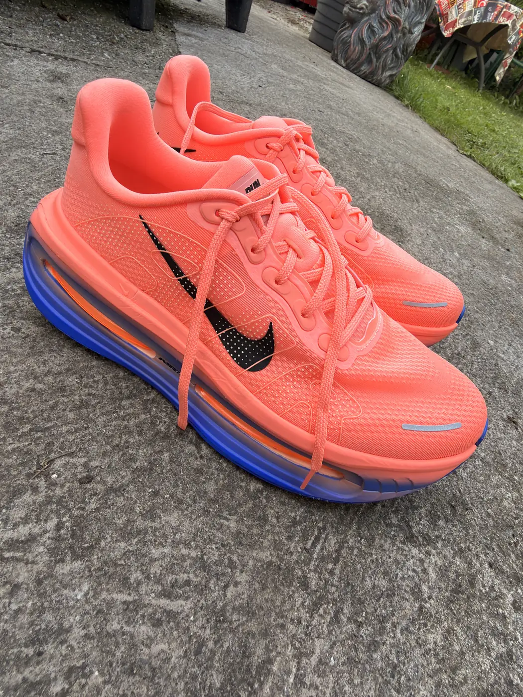

Iron Miles Reviews
Real products. Real miles. Honest verdicts.
Nothing here is reviewed from a spec sheet. Every product on this page has been worn, run in, raced in or trained with — through ordinary weeks of training, through race day, and through the everyday use of the Iron Miles Club. If something has not been tested properly yet, we say so and leave the verdict blank until it has.
We do not publish a score for the sake of having one, and we do not soften a verdict because a brand might be reading. If a product suits some runners and not others, that is what the review will say.
More categories open up as products are properly tested — watches, headphones, cycling equipment, nutrition and recovery.

Nike Zoom Fly 6
The shoe I learned to run long in. A half marathon, a road marathon and 63 km of Connemara — and not one blister.
- First half marathon
- Great Limerick Marathon
- Connemara Ultra 63 km

Nike Vomero Premium
Maximum cushioning for heavier runners on recovery days and long road sessions — but the 55 mm stack rules it out for sharp turns, technical terrain and race day.
- Recovery runs
- Easy road mileage
- Recovery rating 8/10
How we test
Iron Miles reviews come from use, not from unboxing. A product earns a verdict here once it has been through enough genuine training and racing that the opinion is worth something.
- Everything is bought and used normally — through training blocks, club sessions and races.
- We only state what was actually experienced. No estimated mileage, no invented test data.
- Technical specifications are only printed once confirmed against the manufacturer's own source.
- A score is only shown where a real one has been given. Most reviews here carry no score at all.
- Reviews are written from the perspective of a heavier, strength-built runner — because that perspective is usually missing from running gear reviews.
This review is based on genuine personal use. If an affiliate link is added, Iron Miles may receive a commission from qualifying purchases at no additional cost to you. Commercial relationships do not determine our verdicts.